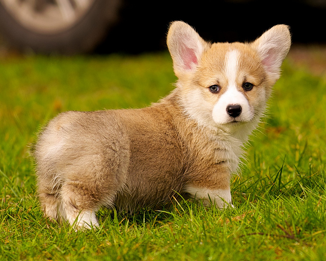

Corgis are awesome. I want a Corgi puppy for this christmas.

The Pembroke Welsh Corgi is a cattle herding dog breed which originated in Pembrokeshire, Wales. It is one of two breeds known as a Welsh Corgi. The other is the Cardigan Welsh Corgi, and both descend from the line that is the northern spitz-type dog.